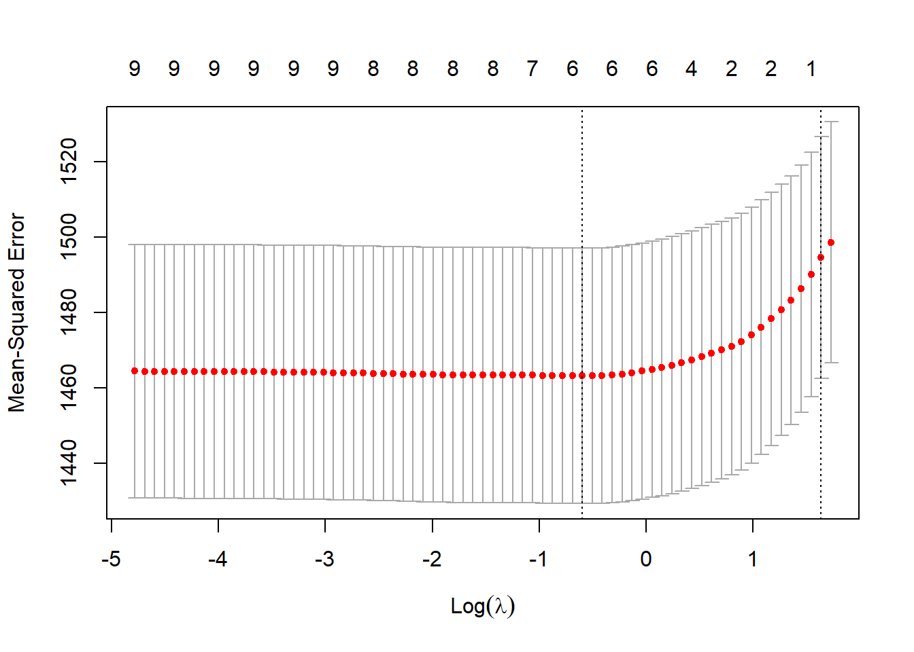
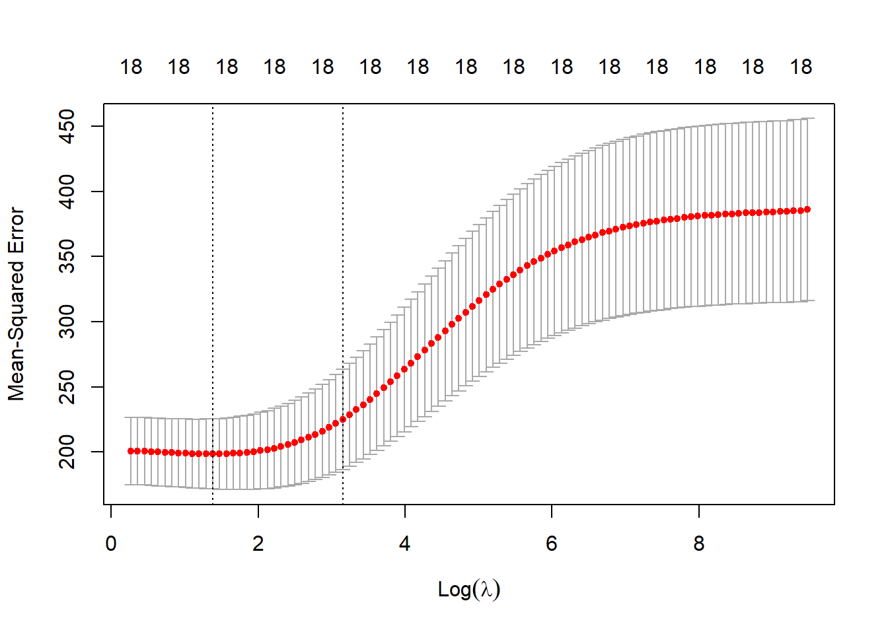

3 Regularized Regression Implementation to the Jackson Heart Study Data
3.0.1 Preparing the data
The Jackson Heart Study data will be examined using to show the process difference between LASSO, Ridge Regression, Elastic Net, and a traditional OLS regression model. The value of total cholesterol will be modeled against the subject’s age, bmi, hba1c, systolic blood pressure, diastolic blood pressure, plasma glucose level, and plasma insulin level, waist circumference, and past 12 month average alcohol use. Missing observations will be corrected using the MICE algorithm.
#Import data sets
analysis1 <- read_dta("analysis1.dta")
df <- (analysis1)
df<- df %>% select(c("totchol","age","bmi","sbp","dbp","hba1c","fpg","fastinginsulin","alcw", "waist"))
mcar <- na.test(df) Little's MCAR Test
n nIncomp nPattern chi2 df pval
2653 315 17 336.83 123 0.000The results of the MCAR test are significant, so the data is not missing at random.The MICE algorithm will be used to impute the missing data values.
cleanedData <- mice(df, printFlag = FALSE)
df <- complete(cleanedData,1)
dfpred <- df %>% select(c(-"totchol"))
dfResp <- df %>% select(c("totchol"))
dfResp <- data.matrix(dfResp)
dfpred <- data.matrix(dfpred)The data is now cleaned and complete.
To see the impact of multicollinearity present in the fitted model, the VIF (Variable Inflation Factor) will be calculated and displayed.
It will be passed through several regression models, beginning with a traditional OLS regression.
Before we begin, we fill first examine the data for correlations between the variables.
corrplot::corrplot(cor(df), method="number")
The correlation matrix shows some correlation between waist and bmi, as well as systolic and diastolic blood pressures.
Once the model has been fit, it will be examined for the presence of multicollinearity between its independent variables. The importance of these steps is to ensure that whatever model we fit will be the best fit for the specific qualities of the data.
ggplot(df)+aes(totchol)+geom_histogram(binwidth=30)+labs(x="Total Cholesterol")
model = lm(totchol ~ age+bmi+sbp+dbp+hba1c+fpg+fastinginsulin+alcw+waist, data=df)
ols_vif_tol(model) Variables Tolerance VIF
1 age 0.7032523 1.421965
2 bmi 0.3124746 3.200260
3 sbp 0.5411050 1.848070
4 dbp 0.6012865 1.663101
5 hba1c 0.3651503 2.738599
6 fpg 0.3783066 2.643359
7 fastinginsulin 0.7654541 1.306414
8 alcw 0.9534784 1.048791
9 waist 0.3126722 3.198238summary(model)
Call:
lm(formula = totchol ~ age + bmi + sbp + dbp + hba1c + fpg +
fastinginsulin + alcw + waist, data = df)
Residuals:
Min 1Q Median 3Q Max
-108.02 -26.60 -2.75 23.14 136.78
Coefficients:
Estimate Std. Error t value Pr(>|t|)
(Intercept) 144.17854 9.19552 15.679 < 2e-16 ***
age 0.40452 0.07514 5.384 7.93e-08 ***
bmi -0.01896 0.18930 -0.100 0.9202
sbp 0.08528 0.06453 1.321 0.1865
dbp 0.22115 0.11149 1.984 0.0474 *
hba1c 0.07196 1.10335 0.065 0.9480
fpg 0.09186 0.04265 2.154 0.0313 *
fastinginsulin 0.06261 0.07178 0.872 0.3832
alcw 0.01540 0.15082 0.102 0.9187
waist -0.04129 0.08327 -0.496 0.6200
---
Signif. codes: 0 '***' 0.001 '**' 0.01 '*' 0.05 '.' 0.1 ' ' 1
Residual standard error: 38.1 on 2643 degrees of freedom
Multiple R-squared: 0.03081, Adjusted R-squared: 0.02751
F-statistic: 9.336 on 9 and 2643 DF, p-value: 4.434e-14In this approach, if we choose to remove the variables not considered significant, we would lose the information they provide to the model.
3.0.2 Ridge Regression Model
model <- cv.glmnet(dfpred, dfResp, alpha=0)
bestLambda <- model$lambda.min
bestLambda[1] 11.78014plot(model)
finalModel <- glmnet(dfpred,dfResp, alpha=0, lambda=bestLambda)
coefTable <- coefficients(finalModel)
finalModelPredict <- predict(finalModel, s= bestLambda, newx = dfpred)
model$glmnet.fit %>% varImp(lambda = model$lambda.min, scale=F) Overall
age 0.297244013
bmi 0.058085793
sbp 0.104778689
dbp 0.139792305
hba1c 0.638665698
fpg 0.062491100
fastinginsulin 0.045608139
alcw 0.002189947
waist 0.013797106eval_results(dfResp,finalModelPredict,df) RMSE Rsquare
1 38.05374 0.02961777library(genridge)Warning: package 'genridge' was built under R version 4.2.2Loading required package: carWarning: package 'car' was built under R version 4.2.2Loading required package: carData
Attaching package: 'car'The following object is masked from 'package:dplyr':
recodeThe following object is masked from 'package:purrr':
some
Attaching package: 'genridge'The following object is masked from 'package:caret':
precisionlibrary(car)
summary(finalModel) Length Class Mode
a0 1 -none- numeric
beta 9 dgCMatrix S4
df 1 -none- numeric
dim 2 -none- numeric
lambda 1 -none- numeric
dev.ratio 1 -none- numeric
nulldev 1 -none- numeric
npasses 1 -none- numeric
jerr 1 -none- numeric
offset 1 -none- logical
call 5 -none- call
nobs 1 -none- numericIn the Ridge regression, each variable has now had their coefficient scaled based on how much importance they add to the model. No variable can be eliminated using this method, but the penalty term can cause their coefficient, and therefore their weight, to approach 0.
3.0.3 LASSO Regression Model
model <- cv.glmnet(dfpred, dfResp, alpha=1)
bestLambda <- model$lambda.min
bestLambda[1] 0.706201plot(model)
finalModel <- glmnet(dfpred,dfResp, alpha=1, lambda=bestLambda)
coefTable <- coefficients(finalModel)
for(x in 1:nrow(coefTable)){
if(coefTable[x,1] > 0)
{print(coefTable[x,1])
}
}[1] 153.5196
[1] 0.3411542
[1] 0.08854914
[1] 0.1159561
[1] 0.07625768finalModelPredict <- predict(finalModel, s= bestLambda, newx = dfpred)
model$glmnet.fit %>% varImp(lambda = model$lambda.min, scale=F) Overall
age 0.34086381
bmi 0.00000000
sbp 0.08880358
dbp 0.11566071
hba1c 0.00000000
fpg 0.07626091
fastinginsulin 0.00000000
alcw 0.00000000
waist 0.00000000eval_results(dfResp,finalModelPredict,df) RMSE Rsquare
1 38.05838 0.02938099In the LASSO regression, the penalty term can cause the variables to be dropped from the model by setting their coefficient to 0. This occurs when their importance is very low.
3.0.4 Elastic Net Model
model <- cv.glmnet(dfpred, dfResp, alpha=.5)
bestLambda <- model$lambda.min
bestLambda[1] 1.172601plot(model)
finalModel <- glmnet(dfpred,dfResp, alpha=.5, lambda=bestLambda)
coefTable <- coefficients(finalModel)
for(x in 1:nrow(coefTable)){
if(coefTable[x,1] > 0)
{print(coefTable[x,1])
}
}[1] 151.9855
[1] 0.3454318
[1] 0.08967311
[1] 0.1277632
[1] 0.07894259finalModelPredict <- predict(finalModel, s= bestLambda, newx = dfpred)
eval_results(dfResp,finalModelPredict,df) RMSE Rsquare
1 38.05413 0.02959792model$glmnet.fit %>% varImp(lambda = model$lambda.min, scale=F) Overall
age 0.34516846
bmi 0.00000000
sbp 0.08990106
dbp 0.12750200
hba1c 0.00000000
fpg 0.07894571
fastinginsulin 0.00000000
alcw 0.00000000
waist 0.00000000Similarly to the LASSO regression, the Elastic Net method can also cause variables to be dropped from the model when they offer no importance to the prediction. The value of alpha in the glmnet package determines the strength of the lambda parameter.